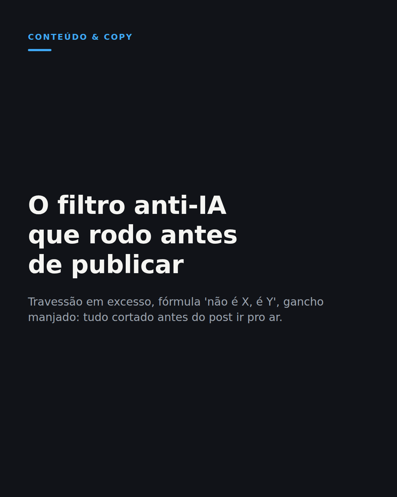

Por que corto travessão em excesso de qualquer copy que passa pela minha mão — inclusive a gerada por IA
1. Copie o texto
Marca grande lançando campanha com o selo "feito por humano" virou estratégia de marketing em 2026. Eu já rodava esse filtro sozinho, sem campanha nenhuma.
Tenho um filtro anti-vício de IA que passo em cima de todo texto que sai da minha mão, inclusive o que a IA ajuda a escrever.
Corto travessão em excesso. Corto a fórmula "não é X, é Y" repetida em toda frase de efeito. Corto abertura genérica tipo "no mundo atual". Corto gancho manjado tipo "e o resultado foi".
Não é purismo anti-IA. É que esses vícios ficaram tão comuns que qualquer leitor treinado reconhece de longe, e isso derruba a confiança antes da segunda linha.
O erro não é usar IA pra escrever. É publicar sem revisar o que ela devolveu.
Hoje uso IA em quase todo texto que escrevo. Mas nenhum vai pro ar sem passar por esse filtro antes.
Qual vício de escrita de IA mais te incomoda quando você lê um post?
#copywriting #iamarketing #conteudodigital
2. Baixe o visual

Baixar imagem